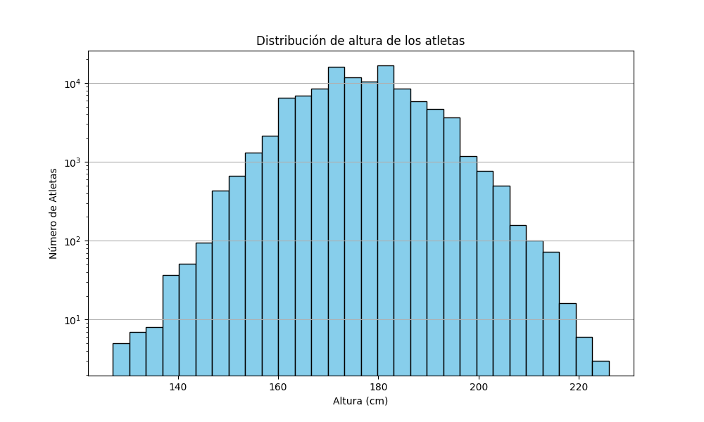
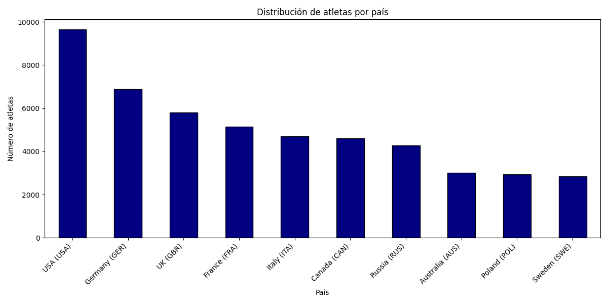

| ID | Name | Country | Region | City | Born Date | Decease Date | Height (Cm) | Weight (Kg) |
|---|---|---|---|---|---|---|---|---|
| 148512 | Benjamin Alexander | UK (GBR) | England | London | 1983-05-08 | Sin Datos | nan | nan |
| 148517 | Ashley Watson | UK (GBR) | England | Peterborough | 1993-10-28 | Sin Datos | nan | nan |
| 148716 | Peder Kongshaug | UK (GBR) | England | Wimbledon | 2001-08-13 | Sin Datos | 184.0 | 86.0 |
| 149041 | Axel Brown | UK (GBR) | England | Harrogate | 1992-04-02 | Sin Datos | nan | nan |
| 149111 | Jean-Luc Baker | UK (GBR) | England | Burnley | 1993-10-07 | Sin Datos | nan | nan |
| ID | Name | Country | Region | City | Born Date | Decease Date | Height (Cm) | Weight (Kg) |
|---|---|---|---|---|---|---|---|---|
| 596 | Leroy Watson | UK (GBR) | England | Broseley | 1966-07-06 | Sin Datos | 175.0 | 63.0 |
| 7341 | Ian Watson | Sin Datos | Sin Datos | Sin Datos | 1949-06-07 | 1981-07-24 | 180.0 | 81.0 |
| 9708 | Deborah Watson | UK (GBR) | England | Harpenden | 1964-05-30 | Sin Datos | 173.0 | 73.0 |
| 11334 | Mary Gordon-Watson | UK (GBR) | England | Blandford | 1948-04-03 | Sin Datos | 162.0 | 56.0 |
| 12987 | John Watson | UK (GBR) | England | London | 1952-02-03 | Sin Datos | 175.0 | 65.0 |
| 13263 | Tracey Watson-Gaudry | Australia (AUS) | Victoria | Yallourn | 1969-06-17 | Sin Datos | 172.0 | 58.0 |
| 17134 | Dave Watson | Sin Datos | Sin Datos | Sin Datos | 1946-12-19 | Sin Datos | 182.0 | 73.0 |
| 17135 | George Watson | Canada (CAN) | Ontario | Toronto | 1890-02-26 | 1938-06-28 | nan | nan |
| 17136 | John Watson | Sin Datos | Sin Datos | Sin Datos | 1947-04-01 | Sin Datos | 186.0 | 78.0 |
| 17137 | Michael Watson | Sin Datos | Sin Datos | Sin Datos | 1938-01-14 | Sin Datos | 180.0 | 68.0 |
| ID | Name | Country | Region | City | Born Date | Decease Date | Height (Cm) | Weight (Kg) |
|---|---|---|---|---|---|---|---|---|
| 89782 | Yao Ming | China (CHN) | Shanghai | Xuhui District | 1980-09-12 | Sin Datos | 226.0 | 141.0 |
| 7013 | Arvydas Sabonis | Lithuania (LTU) | Kaunas | Kaunas | 1964-12-19 | Sin Datos | 223.0 | 122.0 |
| 5804 | Tommy Burleson | USA (USA) | North Carolina | Crossnore | 1952-02-24 | Sin Datos | 223.0 | 102.0 |
| 89787 | Roberto Dueñas | Spain (ESP) | Madrid | Madrid | 1975-11-01 | Sin Datos | 221.0 | 137.0 |
| 122147 | Zhang Zhaoxu | China (CHN) | Shandong | Binzhou | 1987-11-18 | Sin Datos | 221.0 | 110.0 |


| ID | Name | Country | Region | City | Born Date | Decease Date | Height (Cm) | Weight (Kg) |
|---|---|---|---|---|---|---|---|---|
| 142574 | Javier Pérez | Spain (ESP) | Madrid | Madrid | 1996-10-11 | Sin Datos | 192.0 | 68.0 |
| 142568 | Nicolás García | Spain (ESP) | Madrid | Madrid | 2002-06-18 | Sin Datos | 189.0 | 68.0 |
| 142481 | Pablo Sánchez-Valladares | Spain (ESP) | Madrid | Torrejón de Ardoz | 1997-11-12 | Sin Datos | 186.0 | 69.0 |
| 133716 | Jesús Tortosa | Spain (ESP) | Madrid | Madrid | 1997-12-21 | Sin Datos | 185.0 | 58.0 |
| 67180 | Juan Carrasco | Spain (ESP) | Madrid | Madrid | 1958-03-30 | Sin Datos | 185.0 | 68.0 |
| 12004 | Juan Diego García-Trevijano | Spain (ESP) | Madrid | Madrid | 1965-03-30 | Sin Datos | 184.0 | 65.0 |
| 142573 | Adrián Vicente | Spain (ESP) | Madrid | Madrid | 1999-06-11 | Sin Datos | 183.0 | 58.0 |
| 67225 | Jorge González | Spain (ESP) | Madrid | Madrid | 1945-01-27 | Sin Datos | 182.0 | 66.0 |
| 67226 | Luis González | Spain (ESP) | Madrid | Madrid | 1969-06-17 | Sin Datos | 181.0 | 63.0 |
| 24890 | Raúl | Spain (ESP) | Madrid | Madrid | 1977-06-27 | Sin Datos | 180.0 | 66.0 |
| 126021 | Aauri Bokesa | Spain (ESP) | Madrid | Madrid | 1988-12-14 | Sin Datos | 180.0 | 62.0 |
| 86812 | Luis Miguel Martín | Spain (ESP) | Madrid | Madrid | 1972-01-11 | Sin Datos | 180.0 | 69.0 |
| 12529 | Beltrán, Duque de Albuquerque | Spain (ESP) | Madrid | Madrid | 1918-12-15 | 1994-02-08 | 180.0 | 66.0 |
| 92289 | Úrsula Martín | Spain (ESP) | Madrid | Madrid | 1976-06-01 | Sin Datos | 180.0 | 69.0 |
| 14524 | José Gómez | Spain (ESP) | Madrid | Navalcarnero | 1944-01-09 | 2014-06-14 | 179.0 | 67.0 |